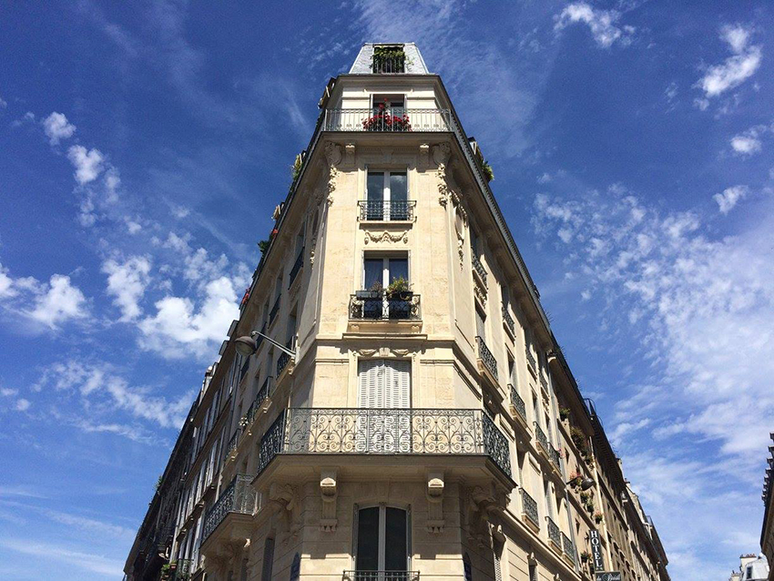
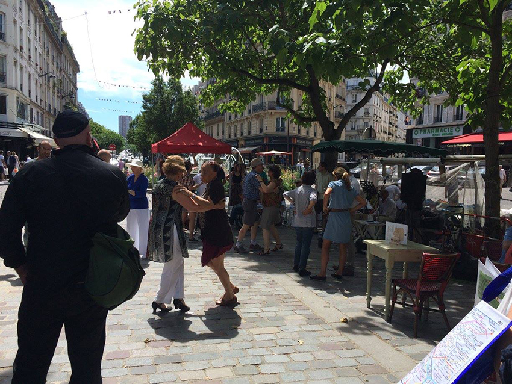
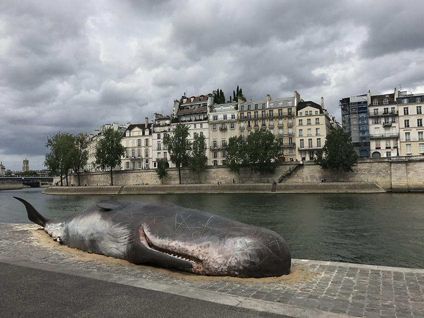
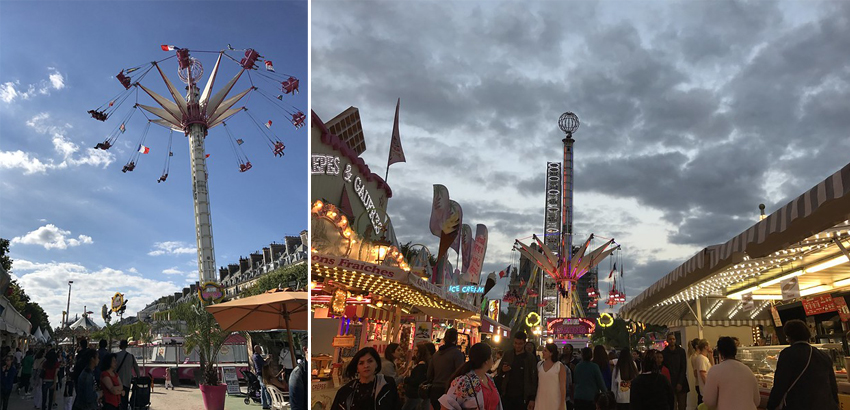
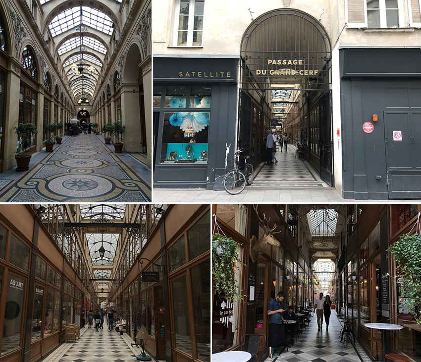
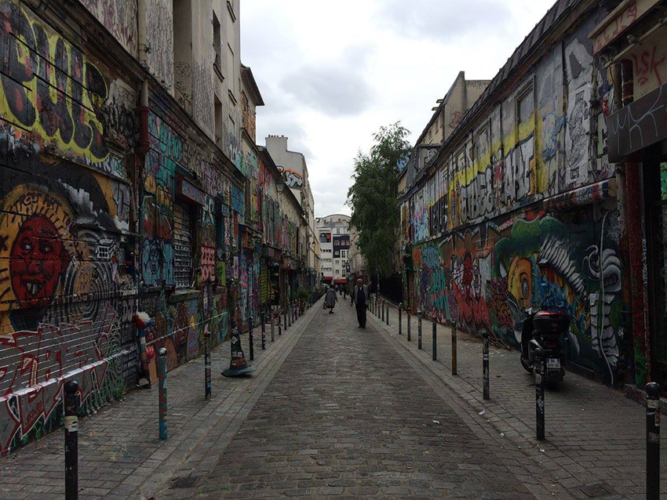
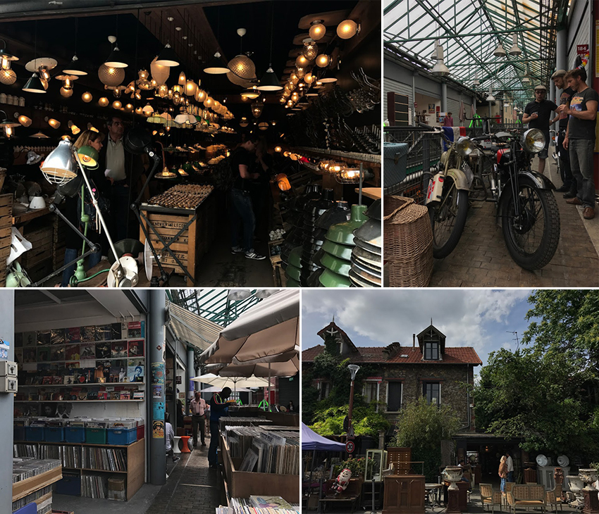
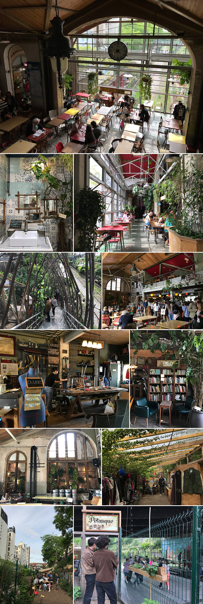
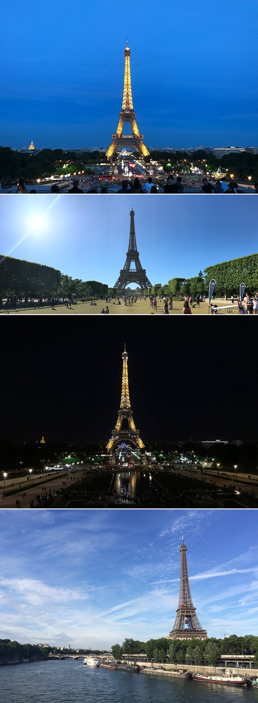

|  |
待在法國為期一個多月的日子，除了用心體會這個社會的悠哉浪漫，也不忘繃緊神經顧好隨身包；用雙腳踏過用石板舖成的大街小巷和柏油馬路、在地鐵中爬過上上下下的階梯；用雙眼欣賞在不同區域獨有的雕刻建築、觀察每戶人家用不同種類的鮮花為自家窗台佈置得優雅可愛、不經意出現在眼前擁吻的情侶；用雙耳聆聽來回穿梭那些似懂非懂的法文、偶爾經過街頭藝人所帶來的演出、搭地鐵時在月台演奏的管弦樂團、在車廂內不時傳來的口風琴聲、清唱歌聲甚至嘴巴喊著1 Euro 1 Euro的討錢聲；在這個美食之都，我嚐遍最愛的法式甜點、可頌麵包和幾乎沒有熱食的三餐；在沒有空調的地鐵裡彷彿只有悶熱的二氧化碳循環著，由不同人種所散發出的體味與香水味摻雜其中、進出站偶爾需要走很長的通道才會到月台或出口，沿路不時會聞到陣陣尿騷味、有些三五好友在路邊毫不遮攔抽著大麻煙；夏天有時候不客氣地飆到高溫30度，到了傍晚又狠狠降到10幾度低溫。綜合所有感官，享受在這個城市的每一天，盡可能不當個觀光客，而是在巴黎當一個敏銳的異鄉客。
|  |
來到巴黎絕對不能錯過6/21的La Fête de la Musique音樂季，各區幾乎都有免費的音樂派對，除了這天以外，平常就有從世界各國來表演的歌手或DJ。我會從Bandsintowm Concerts這個APP查詢接下來距離最近的Live Music或演唱會在何時何地舉行，如果臨時想聽表演卻又買不到票，就可以到TicketSwap去碰碰運氣，看是否有人釋出票券或交換票券。在巴黎聽音樂大概是數一數二讓我感到激動的事，因為比較少知名歌手會來訪台灣、門票不平易近人、舞台音效與燈光效果也不如預期，相較在巴黎一場不到20€的音樂會，就能享受現場的感動，想聽音樂隨時可以出發！
|  |
法國工作一年就有五週的有薪假，每到七、八月當地人會往外地度假，有些店家甚至直接關門放假去了，和五、六月相較下人煙稀少了許多。近年當地政府以人為本的河岸改造計畫，在每年夏天七、八月舉辦巴黎沙灘節，認真從西濱運送海砂到右岸，讓正在放假的巴黎人不用離開巴黎也能享受沙灘和陽光。在塞納河畔無處沒有驚喜，走在路上突然看見一隻身長一、二十公尺的抹香鯨擱淺在河邊，經過了解才知道原來是這由一群比利時的環保人士所設置的雕塑，提醒大家對環境保育的重視與尊重。
|  |
在杜樂麗花園旁，每年在六月底到八月會設置 « Foraine des Tuileries » 露天遊樂嘉年華，集合一些娛樂設施和美食攤飯，園區內燈光耀眼跟花園旁的優雅街道呈現對比氣息，像極電影場景裡跳躍時空的情節。讓人驚訝的是，前一天經過花園時還沒有這些設施與攤販，過了一個半夜這些大型機具就這樣擺在眼前，不禁讚嘆工作人員的效率！
|  |
巴黎的天氣陰情多變，在市中心巷弄間其實藏著許多條華麗的拱廊街，相較於主打知名品牌的百貨公司，由選物店、書店、訂製裁縫店等文青小店家組成，還有一些餐廳坐落其中，猶如古老的購物中心。穿梭這一條條拱廊街，彷彿電影幻片般來回切換。Galerie Vivienne、Passage du Grand-Cerf，古典優雅又帶點神秘，皆是陰雨的好去處。
|  |
市中心現存 60 % 經典的奧斯曼式建築都在中古世紀興建，採用的建材依照建築美學的規定，在顏色上必須呈現一致。而建築色調越往北走建築就越來越樸華，我抱著既期待又帶有一絲緊張的心走在Belleville的街道上，因為氛圍完全不同，有別於蒙馬特的獨特藝術氣息，這裡又集中更多次文化藝術，雖然到處都有塗鴉，但在19區的街道上，呈現出的色彩更為強烈且密集，沿路深刻體會到城市興衰的差異。
|  |
巴黎北邊郊區有個最古老、範圍最大的 « Marché aux puces de Saint-Ouen » 聖圖安跳蚤市場，它的佔地就像一個社區般，各家販售商品大不相同，有專門賣大小型傢俱與生活用品、燈飾、黑膠CD唱片、二手服飾、畫作、骨董雜貨等等，慢慢地走，悠悠地體會老巴黎的舊式情懷。
|  |
從聖圖安跳蚤市場離開時，經過一家由廢棄火車站改建為結合餐廳、酒吧、咖啡屋的複合式環保餐廳 « La REcyclerie »。室內有寬闊的樓中樓和露天座椅，甚至還能看到店家飼養的家禽、自家栽培的有機蔬菜與土壤循環的魚池，每個區塊細節角落的佈置都很用心，火車道旁有二手市集小攤販可以逛，走到鐵道前的空地看見大家放著音樂共舞起來。餐廳內有個4R標語 « Repenser, Réduire, Réparer, Recycler » 代表著 «重新思考、減少、修理、回收利用»，鼓勵大家進行有意識的生活，將浪費資源的可能降到最低。那天在市集掏到了一件藍白相間格紋削肩襯衫，因為後頸鈕釦掉了，賣家只收我1€。回家後我補縫了顆白色珍珠鈕釦，從那年開始算起，這件背心即將陪我度過第四個夏天。
|  |
由於巴黎夏天的白晝可以長達18個小時，就算已經很晚了天色都還沒暗，這也是我喜歡這個季節來旅遊的原因之一。回程的路上只要時間還夠，就會搭車去戰神廣場散步，坐在草地看著鐵塔休息發呆。除了在戰神廣場前能看到鐵塔全貌，從另一邊的夏佑宮也能遠眺它的壯麗，並且晚上10點與11點整都會準時上演燈光秀，閃閃發亮10分鐘，此刻閃爍的瞬間，鐵塔美到讓人捨不得眨眼，分秒都不想錯過這個城市帶給我的感動！